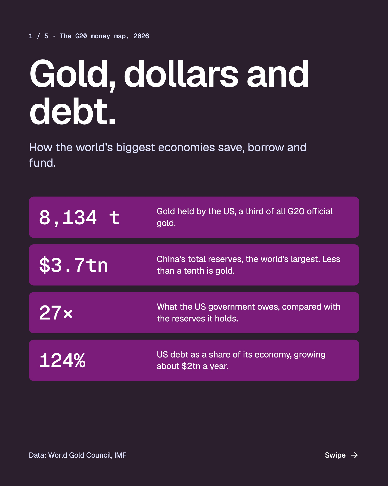
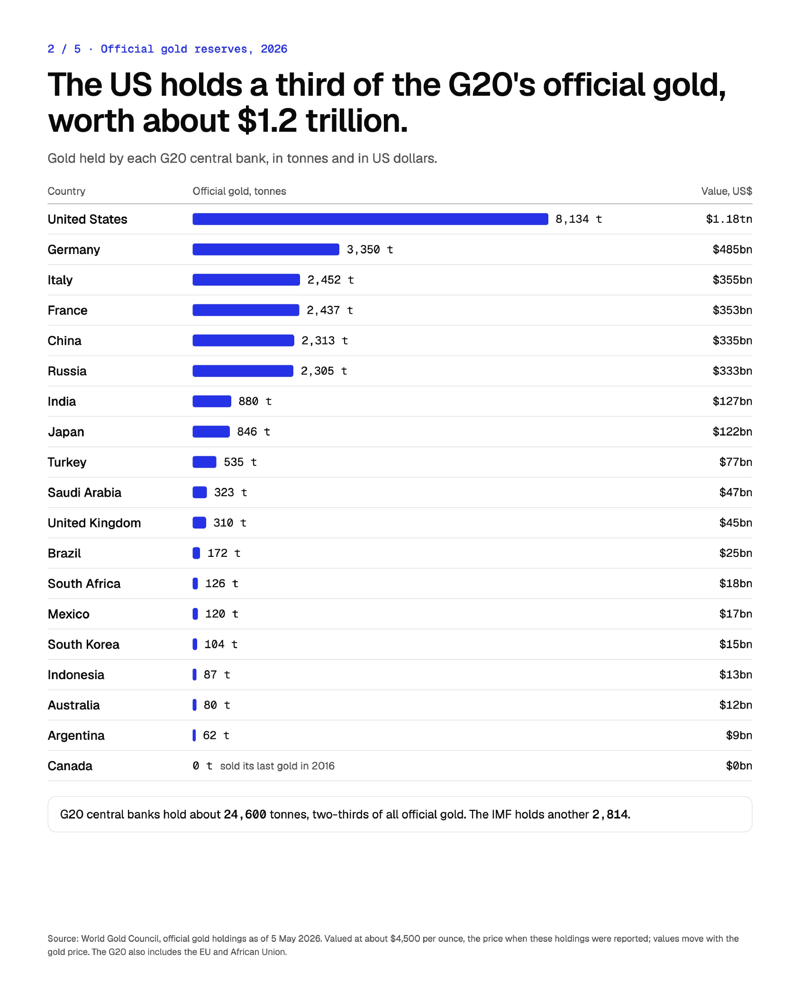
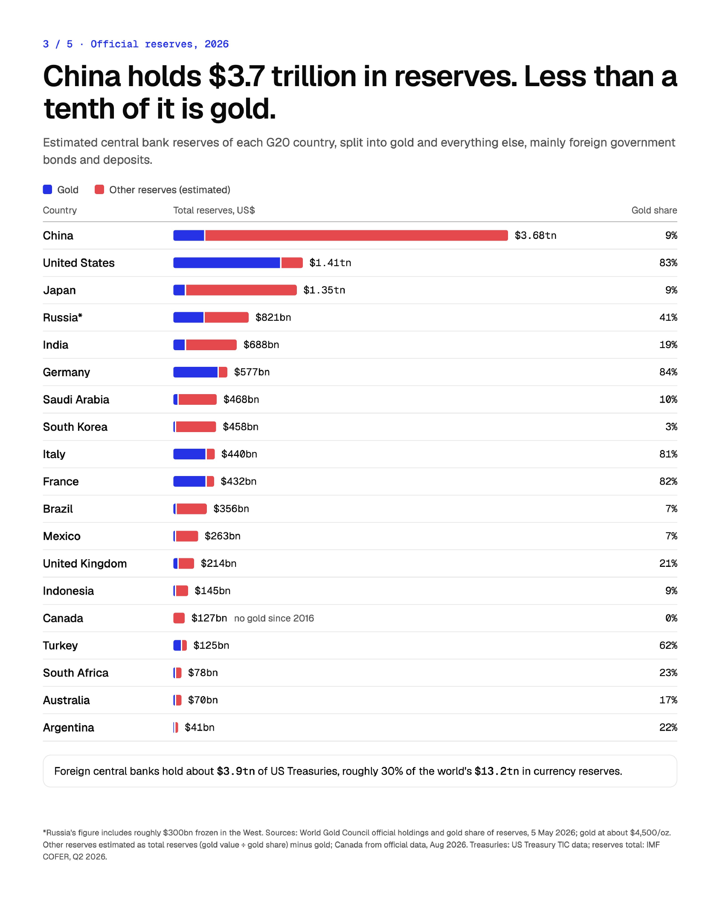
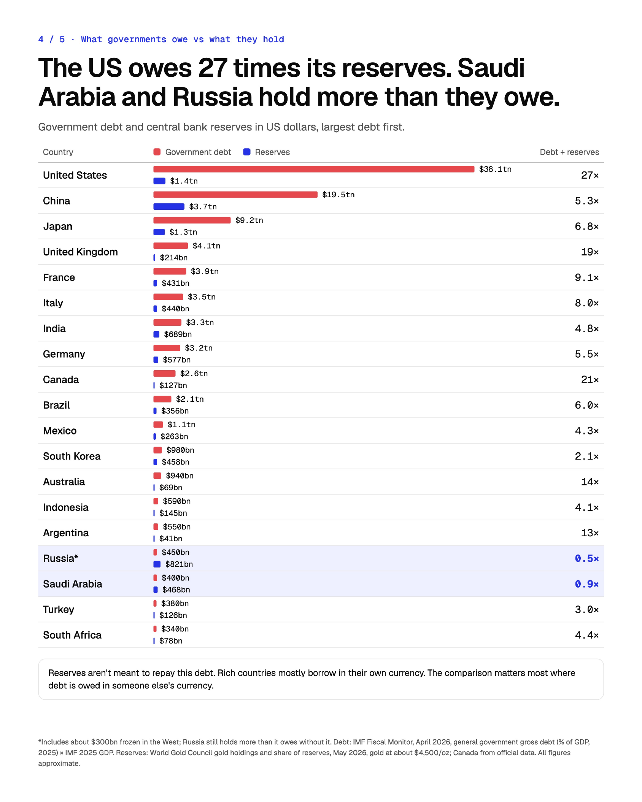
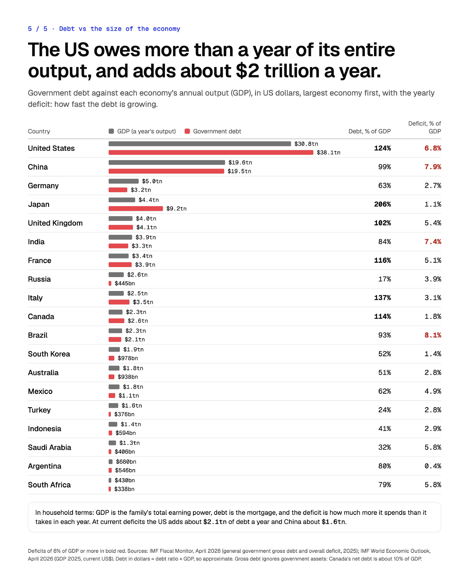

Cross-Border Payments in 2040 and Central Bank Reserves
Published on October 12, 2026
This past weekend I read Deutsche Bank's "Cross-border payments in 2040" white paper and ended up down a research rabbit hole. The paper's first hypothesis is that central banks are diversifying their reserves, yet the dollar still carries around half of global payments.
I wanted to understand what's actually happening to reserves, so I dug into the G20 numbers. A few things stood out:
- Gold's share of reserves has jumped since 2022, driven by record central bank buying and a gold price that has roughly doubled. Much of that buying followed the freezing of Russia's reserves in 2022, which showed that dollar and euro reserves can be blocked.
- Dollar reserves have held steady at around $7.5tn. Diversification is happening with new money rather than by selling dollars, so the dollar's share of global currency reserves has drifted down, from over 70% in 2000 to about 57% today.
- The US holds 83% of its reserves in gold. China holds $3.7tn in reserves, and less than a tenth is gold. Russia was a big beneficiary of the gold price rise, having built most of its gold reserves before 2022, which has partly offset the roughly $300bn frozen in the West. That picture is changing, though, as Russia has been selling gold this year to fund its budget deficit.
- The US government owes about 27 times the reserves it holds. Saudi Arabia and Russia hold more than they owe.
- Japan owes twice its annual output, yet its debt ratio is projected to fall, because its economy is growing faster than its interest bill.
The numbers back up the paper’s point: reserves are diversifying slowly at the edges, while payments remain very much a dollar world. Some of the detail surprised me, such as Russia holding more in reserves than it owes.
Sources: World Gold Council, IMF, US Treasury. Figures are approximate and rounded.
The G20 Money Map (Carousel)
Below are the slides from the research summary. You can also download the full PDF here.




